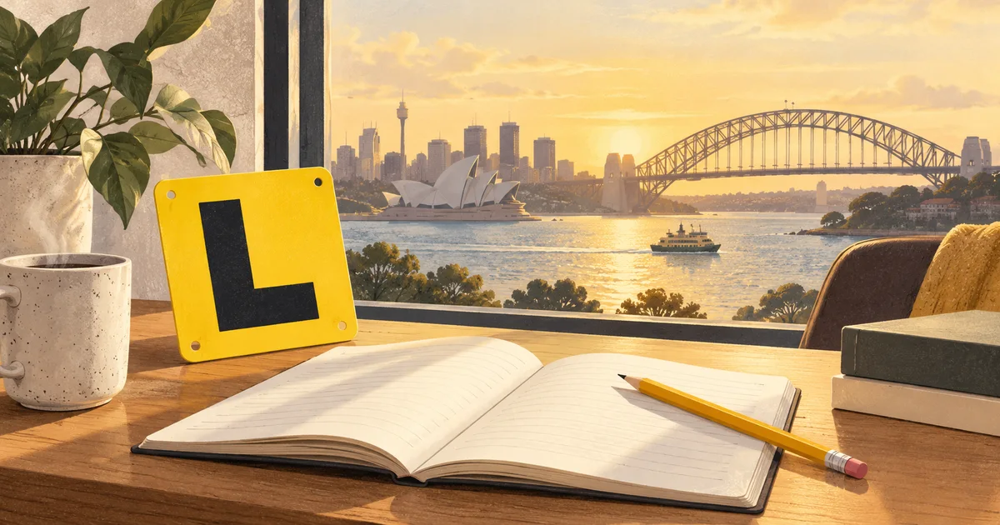

Summary
The NSW Driver Knowledge Test (DKT) is the multiple-choice test you pass to get a learner licence in New South Wales. It is built on the Road User Handbook, and the format the NSW Government publishes is 45 questions in two parts: general knowledge (15 questions, 12 to pass) and road safety (30 questions, 29 to pass). This guide covers the format, the online option, what to study and what comes next, as checked on 30 September 2026.
Where does the DKT fit in the NSW licence journey?
New South Wales uses a graduated licensing scheme. You start on a learner licence, move to a P1 licence (red P plates), then a P2 licence (green P plates), and finally a full licence. The whole journey takes at least four years if you are under 25, or three years if you are 25 or older.
Three tests mark the way. The Driver Knowledge Test gets you your Ls. The Hazard Perception Test comes during your learner period. The practical driving test gets you your P1 licence. The DKT is the only one you can do before you have driven at all, which is why it is all about knowing the rules rather than handling the car.
What is the format of the DKT?
The format the NSW Government publishes for its knowledge tests is 45 multiple-choice questions split into two parts, each with its own pass mark:
- General knowledge: 15 questions, and you need at least 12 right.
- Road safety: 30 questions, and you need at least 29 right.
The in-person test runs on a computer, with questions drawn at random from a question bank, and no time limit is published. It also stops early: a 4th wrong answer in general knowledge, or a 2nd wrong answer in road safety, ends the test, because at that point you can no longer pass.
It helps to think of this as a mistake budget. You can drop 3 questions in general knowledge, but only 1 in road safety. Road safety is twice as long and almost unforgiving, so it deserves most of your revision time.
This 45-question structure is spelled out on the NSW Government's rider knowledge test page, and the car DKT is reported to follow it. Confirm the details on the official DKT page when you book.
In person or online: which DKT should you choose?
You have two routes. The in-person DKT is open from age 16. The DKT online, introduced in 2024, is a course of about 4 to 6 hours with a final test at the end, and you can start it from 15 years and 11 months. The NSW Government doesn't publish how many questions the online final test has or what its pass mark is.
Both routes are built on the same book, the Road User Handbook, so your preparation is the same either way. The online course suits people who like to learn in stages; the in-person test suits people who are ready now and want the familiar 45-question format.
What should you study for the DKT?
Everything comes back to the Road User Handbook. The edition current on 30 September 2026 is 02/2026, published in February 2026, with 208 printed pages. It runs from licences, through safe driving behaviour (speed, alcohol, drugs, seatbelts, phones and fatigue) and sharing the road, to stopping, giving way and turning, overtaking and merging, lanes and markings, parking, hazards, vehicle safety and penalties.
The NSW Government has also published an official DKT question list, dated 2018. It holds 358 questions: 79 general knowledge, 225 road safety, 51 traffic signs and 3 about test integrity. The busiest topics in it are pedestrians, intersections and giving way, traffic signs, safe following and stopping distances, and traffic lights, which is a useful guide to where the marks are.
Be careful with anything older than the current handbook, though. A few items in the 2018 list no longer match today's rules. For example, red-light cameras in NSW now also detect speeding at any light colour, and the agency you deal with is Transport for NSW rather than the old RTA. When sources disagree, learn the current handbook's version.
Which NSW rules do learners most often get wrong?
These rules come up again and again, and each has a common wrong belief attached:
- STOP signs mean a full stop, every time. Stop behind the line, as close to it as you can, even when no one is coming. A rolling stop is not a stop.
- Yellow means stop if you safely can. Only keep going if you are so close that braking suddenly could cause a crash. Never speed up to beat the red.
- T-intersections: if you are on the road that ends, you give way to every vehicle on the road that continues, whether it is turning or not.
- U-turns at traffic lights are not allowed in NSW unless a “U-turn permitted” sign is shown.
- “Left turn on red permitted after stopping” means exactly that: stop at the red first, then turn when it is safe, giving way to traffic from the right and pedestrians.
- Following distance: keep at least 3 seconds behind the vehicle ahead in good conditions, and 4 or more in the wet, on gravel or at night.
- Only time lowers your blood alcohol. Coffee, water, food, a shower or exercise don't. For learner, P1 and P2 drivers the limit is zero anyway.
- No phones for L and P drivers. Not for calls (even hands-free), music, maps or texts, and not while stopped at lights or in a queue.
- Speed: the default limit is 50 km/h in a built-up area and 100 km/h elsewhere. Learner and P1 drivers may not exceed 90 km/h, and P2 drivers 100 km/h, whatever the signs say. In a shared zone the limit is 10 km/h and you give way to any pedestrian.
What happens after you pass the DKT?
Passing gets you a learner licence, which lasts 5 years. If it runs out, you have to pass the DKT again.
If you are under 25, you must hold your Ls for at least 12 months and log at least 120 hours of supervised driving, including 20 hours at night, before the driving test. The Safer Drivers Course adds 20 bonus hours, and each one-hour lesson with a licensed instructor can be logged as 3 hours.
Your supervisor must hold a full Australian licence and sit beside you, and their blood alcohol must be under 0.05 with no drugs present. Your L plates go on the outside of the car, front and back (or on a roof sign), with the whole letter showing. Learners are not allowed to drive in Moore Park, Centennial Park or Parramatta Park in Sydney, and may not tow at all.
If you are under 25, you can sit the Hazard Perception Test after at least 10 months on your Ls, and a pass stays valid for 15 months for the driving test, which you can take from 17. If you don't pass the driving test, you can re-book and try again after 7 days.
How should you prepare for the DKT?
A simple plan works well. Read the handbook one chapter at a time, and after each chapter answer practice questions on it. Once you have covered everything, start sitting full mock tests in the 15 + 30 format and keep a close eye on the road safety part, where one mistake is all you can afford. Every wrong answer is a signal: read the explanation, look up the handbook page and come back to the question a few days later.
In Learners Test Australia, NSW mock tests follow this format and end where the real test would. Our guide to using mock tests and mistakes explains the method, and the NSW DKT practice test page has the key facts at a glance.